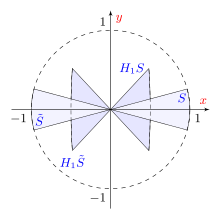

My problem was to make a HTML file with plenty of mathematics from a LaTeX one. As a beginner, I immediately faced the following problems:
After a while I discovered that the most suitable way for me is to join Tex4ht with MathJax. And the simplest way was to run the following command to process test.tex file:
make4ht -s test.tex "myconfig" " -cunihtf -utf8"
and after that, if one wants to embed into resulted test.html the css-file test.css generated during previous command, one should issue one the following command
htlatex test.tex "myconfig" " -cunihtf -utf8"
or once more
make4ht -s test.tex "myconfig" " -cunihtf -utf8"
where the config file myconfig.cfg is as follows
\Preamble{xhtml,0,mathjax,p-indent,fn-in,nostyle}
\Configure{MathjaxBlock}{\ifvmode\IgnorePar\fi\HCode{<span class="mathjax-block">}}{\HCode{</span>}}
\Configure{MathjaxEnv}{\ifvmode\IgnorePar\fi\HCode{<span class="mathjax-env">}}{\HCode{</span>}}
\textwidth=2160pt
\Css{body {margin:5\%; max-width:72em; font-size:large; padding:0 40px;}}
\Css{.thebibliography p.indent {margin-top:1ex; margin-bottom:-1ex; text-indent:1.5em;
font-size:medium}}
\Css{.thebibliography dd {margin-top:0; margin-bottom:1em;}}
\Css{.thebibliography dl{grid-auto-columns:1ex 1fr}}
\Css{.thebibliography p.noindent{margin-top:-2ex}}
\Css{.columns-3 p.indent {text-indent:0}}
\def\eqref#1{$\mathrm{(\ref{#1})}$}
\begin{document}
\EndPreamble
Unfortunately, it turned out that reference in conjunction TeX4ht+MathJax works well when they referenced sections, subsections and other structure element that are in text mode, but when you are trying to reference the label of equation you are getting ???.
The problem is turned out to be rather easily solvable: to reference labels of equations, align or other things in math mode you should put the calling \eqref or \ref in a math environment, e.g. by surrounding them by $’s or \(…\). Another way is to redefine the command \eqref in order that it will be invoked in math mode automatically (see the appropriate string in the config file myconfig.cfg.
So, for the LaTeX code below
\begin{equation}
\boldsymbol{f}(x)=1\label{eq}
\end{equation}
\[
1\neq1. \tag{OneIsNotOne Condition}\label{E:mycond}
\]
Here, the reference to \tag{OneIsNotOne Condition} in previous
equation is as follows: \eqref{E:mycond}
\begin{align}
a&=1\label{A}\\
b&=0\label{B}
\end{align}
Example of references: we have equation \eqref{eq} from Sec. \ref{S1}. Or $\ref{A}$-\eqref{B}.
we obtain the following output: \begin{equation} \boldsymbol {f}(x)=1\label {eq} \end{equation}\[ 1\neq 1. \tag {OneIsNotOne Condition}\label {E:mycond} \]
Here, the reference to \tag{OneIsNotOne Condition} in previous equation is as follows: \(\mathrm {(\ref {E:mycond})}\) \begin{align} a & =1\label {A} \\ b & =0\label {B} \end{align}
Example of references: we have equation \(\mathrm {(\ref {eq})}\) from Sec. 1. Or \(\ref {A}\)-\(\mathrm {(\ref {B})}\).
Tex4th supports TikZ, however, for correct displaying text and math symbols in TikZ picture, it is needed to put in the preamble of tex file the following lines, before TikZ package loading:
\ifdefined\HCode%
\def\pgfsysdriver{pgfsys-dvisvgm4ht.def}%
\fi%
Below is an example of using TikZ.

Citation example: [1].